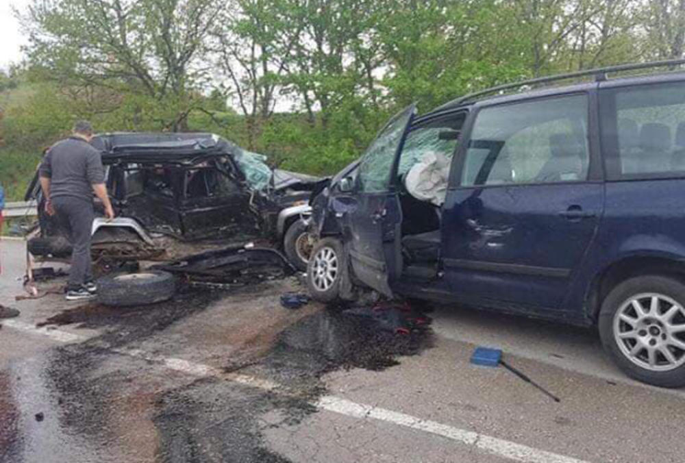
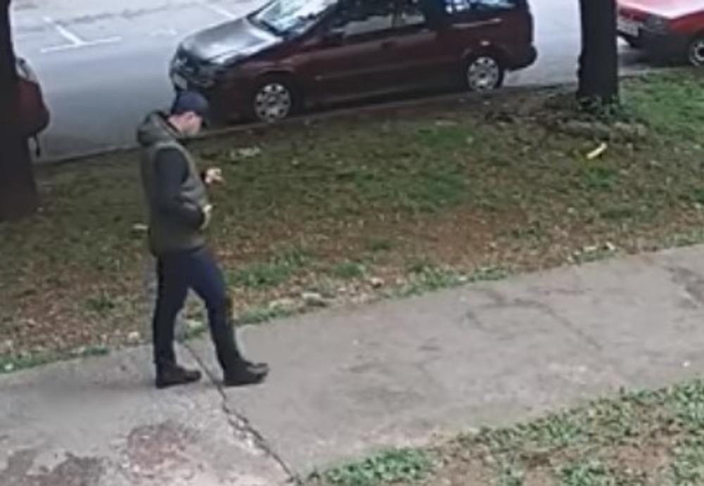
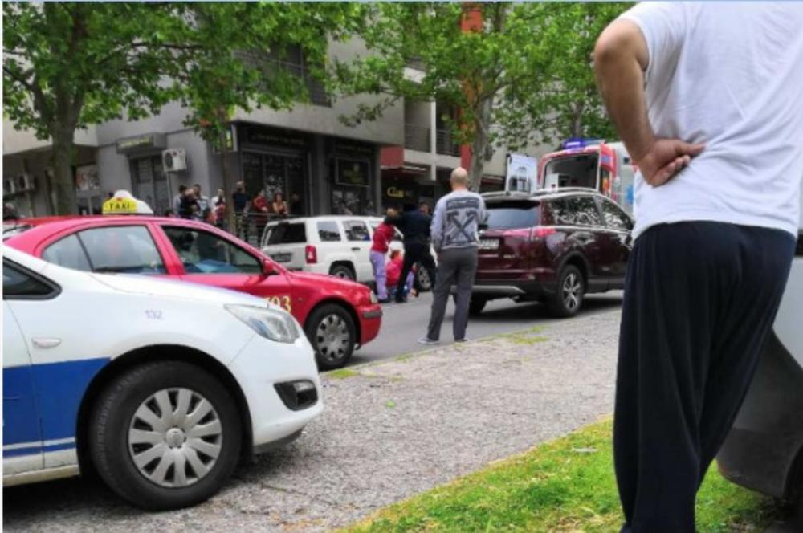
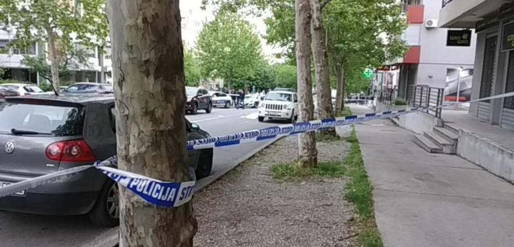

SDve osobe koje su teže povređene u saobraćajci koja se sinoć oko 18 sati dogodila u mestu Rudare kod Kuršumlije, stabilnog su zdravstvenog stanja i nisu životno ugroženi, izjavio je doktor Goran Milosević iz Kliničkog centra u Nišu.
On je rekao da je pacijent koji je primljen na odeljenju za grudnu hirurgiju zadobio povredu grudne kosti, ali da je u stabilnom stanju i spreman za otpust, dok je drugi pacijent, koji je smešten na odeljenju intenzivne nege, u težem stanju, ali je ono stabilno.
"On nije ugrožen, ali ima prelom lopatice, poprečnih nastavaka pršljenskih tela, prelom kostiju podlaktice i karlice, kao i povrede unutrašnjih organa koje ne zahtevaju hirušku interenciju, već samo praćenje", rekao je Milošević za TV Prva.
 FOTO: NJUZ/B.R.U saobraćajnoj nesreći koja se sinoć oko 18 časova dogodila u kuršumlijskom selu Rudare na magistralnom putu Priština - Niš, povređene su tri osobe, preneli su mediji.
Do nesreće je došlo prilikom sudara dva automobila, jednog prokupačkih, a drugog inostranih tablica, koji su se kretali u suprotnim pravcima.
Mediji prenose da je jedna osoba nakon dijagnostike u prokupačkoj bolnici puštena kući, dok su dve osobe koje su zadobile teže povrede, prebačene u KC Niš.
FBEOGRAD - U zgradi u Izvorskoj ulici na Banovom brdu eksplodirala je ručna bomba ispred vrata stana uglednog lekara.
Kako navodi, bomba je bačena ispred vrata stana Miroslava Lazića, hirurga iz Urgentnog centra koji je u tom trenutku bio u stanu.
Pričinjena je materijalna šteta, ali povređenih nije bilo, navodi "Alo" i dodaje da je policija obavila uviđaj na licu mesta i da se intenzivno radi na identifikaciji osobe koja je bacila bombu.
Milo Ilić (28), pripadnik "kavačkog klana", koji je ubijen u ponedeljak popodne nasred ulice u Podgorici, likvidiran je sa 13 hitaca u leđa, pišu podgorički mediji.
Ilić je, inače, u policijskoj evidenciji označen kao pripadnik "kavačkog klana" i jedan od najbližih saradnika Veska Kalezića, visokopozicioniranog pripadnika ove kriminalne grupe, koji je u novembru prošle godine takođe ubijen u podgoričkom naselju Stari aerodrom. I njemu je ubica prišao kada se parkirao i krenuo ka kafiću i u njega sasuo kišu metaka.
 FOTO: PRINTSCREEN MUPnspektori kriminalističke policije došli su do podatka da je Ilić neposredno pre nego što je likvidiran bio u kladionici, u kojoj se zadržao desetak minuta. Kada je izašao iz kladionice i uputio se prema svom vozilu "patriot", ubica mu je prišao s leđa i u njega ispalio više hitaca, najverovatnije iz poluautomatskog pištolja.
Uzeti su snimci sa kamera okolnih zgrada, na kojima se navodno vidi kako muškarac sa kačketom na glavi peške prilazi Iliću, a nakon što je ispalio više hitaca u njega, beži sa lica mesta. Ilić nije imao šanse da preživi.
Policija je juče objavila snimak muškarca sa kačketom za kog se sumnja da je pucao u Ilića. Na snimku se vidi kako on ide ulicom, zastaje kako bi nešto pogledao u telefonu, a nekoliko minuta kasnije vidi se kako on sa rukom u džepu beži sa mesta na kom je Ilić ubijen.
Policija proverava motiv ubistva, a po brutalnosti likvidacije upoređuju ga sa ubistvom Ilićevog prijatelja Veselina Kalezića, koji je važio za bezbednosno interesantno lice.
 FOTO: FOSMEDIAOn je ubijen 19. novembra, 17.30, u podgoričkom naselju Stari aerodrom, u blizini bivšeg stadiona Fudbalskog kluba Grafičar.
Policijski službenici su nedugo potom u selu Botun u Zeti pronašli zapaljeno vozilo.
Podgorička policija je juče privela više desetina osoba na informativni razgovor u okviru istrage o ubistvu Ilića. Među njima je najviše bilo osoba bliskih „škaljarskom klanu”, ali niko nije zvanično osumnjičen za ovaj zločin.
 FOTO: VIJESTIPoslednja u nizu likvidacija koja se dogodila u obračunu kotorskih klanova je ubistvo Veselina Veska Vukotića (69), oca vođa "škaljarskog klana# Jovana i Igora Vukotića. On je pre dve nedelje ubijen ispred svoje kuće u kotorskom naselju Dobrota.
Smrtonosne hice u Vukotića ispalio je zasad neidentifikovani muškarac koji je nosio kačket. Kada je Vukotić izašao iz kuće, ubica je u njega ispalio hice iz pištolja sa prigušivačem, nakon čega je pobegao. Kotoranin je odmah prevezen u bolnicu, gde je ubrzo podlegao povredama.
Četiri osobe teško su povređene u saobraćajnoj nesreći nadomak Beograda, na Ibarskoj magistrali kod Meljaka
Kako saznajemo, došlo je do bočnog sudara autobusa i automobila koji su se kretali u istom smeru. Tom prilikom oba vozila izletela su sa kolovoza, sletela u kanal pored puta i prevrnula se na bok.
Reagovale su dežurne službe. Tri povređene osobe iz autobusa, u kome se vozilo 20 putnika, kao i vozać automobila prevezeni su u Urgentni centar u Beograd.
Prema najnovijim informacijama, sve prevezene osobe su teže povređene.
Autobus je u vlasništvu saobraćajnog preduzeća iz Bajine Baste. Automobil je "opel astra".
Policija proverava motiv ubistva, a po brutalnosti likvidacije upoređuju ga sa ubistvom Ilićevog prijatelja Veselina Kalezića, koji je važio za bezbednosno interesantno lice.
Na ovoj deonici magistrale saobraćaj se odvija otezano.
Za sada nije poznato šta je uzrok nesreće.
Istraga je u toku.
Ovo su najtraženija zanimanja u Kragujevcu, a radnika NEMA DOVOLJNO!

 EUR 118.00 EUR 118.00 |
 USD 105.10 USD 105.10 |
 CHF 103.58 CHF 103.58 |
 GBP 136.63 GBP 136.63 |
 AUD 73.40 AUD 73.40 |
 BAM 60.33 BAM 60.33 |
 HRK 15.92 HRK 15.92 |
 CAD 78.00 CAD 78.00 |